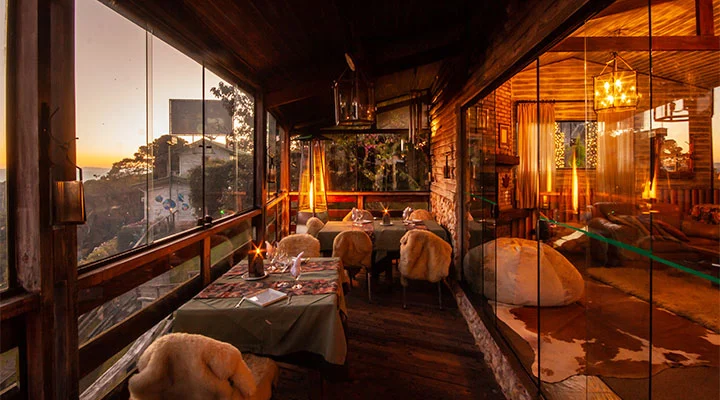

Avaliação
Aqui sua opinião vai além da comida
Este site recebe avaliações, fotos, horários, contato e opiniões reais de clientes sobre um unico restaurante: o Sabor Cacoal, no Cacoal Shopping.
Ambiente do restaurante
Conheça o Sabor Cacoal por dentro.
Estas imagens mostram o espaço, o clima e a experiência visual do restaurante.

Salao principal
Um ambiente com iluminação natural, espaço marcante e identidade forte.

Clima do jantar
O espaço ganha ainda mais presença no clima durante a experiência noturna.
Vista externa
Uma área que transmite conforto e reforça o estilo do restaurante.
Avaliações
O que os clientes dizem sobre o Sabor Cacoal.
Comentários reais mostram como a experiência deste restaurante é percebida por quem já visitou.
★★★★★
"As fotos já chamavam atenção, mas o ambiente ao vivo conseguiu ser ainda melhor."
Marina Souza Visitou no jantar★★★★★
"Gostei muito do ambiente, do atendimento e da forma como o restaurante entrega a experiência."
Rafael Lima Cliente recorrente★★★★☆
"Um restaurante bonito, bem organizado e com uma apresentação que combina com a experiência."
Camila Rocha Avaliou pelo OpiniAkiContato
Quer visitar o Sabor Cacoal?
Fale diretamente com o restaurante para reservar, tirar dúvidas ou confirmar horários de atendimento.